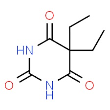
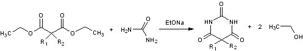

La lettura casuale di un articolo del Journal of the Royal Society of Medecine ed il ritrovamento di un vecchissimo tubetto di un medicinale degli anni '50 (del quale riporto la foto) mi offrono l'occasione per qualche libera divagazione chimico-storica.
La sostanza contenuta nel tubetto era un famoso "sonnifero" (allora si chiamavano le cose per quello che erano...) che usava la buon'anima di mia nonna negli ultimi tempi della sua vita.

Il principio attivo per pillola, a parte qualche percentuale di "estratto di valeriana fresca", erano 50 mg di dietilmalonilurea o meglio di acido 5,5-dietilbarbiturico, il "Veronal", che si aggancia all'articolo sopra citato che leggevo.
Come spessissimo accade quando si parla di chimica classica, la storia si svolge nella patria indiscussa di questa scienza, la Germania.
Alla fine del 1863 Adolf von Baeyer, un altro dei grandi chimici tedeschi (poi premio Nobel nel 1905), condensando l'acido malonico con l'urea riuscì a produrre l'acido barbiturico (riquadro in alto), e siccome la data della scoperta fu probabilmente il 4 dicembre giorno di santa Barbara, la tradizione vuole che Baeyer abbia dato il nome alla nuova sostanza unendo Barbara ad acido urico (con il quale la molecola condivide parti comuni).
Molti anni più tardi, nel 1903, l'ex assistente di von Baeyer Emil Fischer (quanti esteri ho fatto in tuo onore Emil!), insieme con un amico fisiologo e farmacologo, il barone Josef von Mering, scoprirono che mentre l'acido barbiturico in sé non ha alcun effetto diretto sul sistema nervoso centrale, collegando all'atomo di carbonio intermedio dell'acido malonico due gruppi etile -CH2-CH3 ed effettuando la condensazione di Baeyer si otteneva un prodotto fortemente ipnotico, che fu chiamato "barbital".
Anche qui la tradizione vuole che von Mering fosse stato recentemente in Italia ed avesse visitato con piacere Verona; ritenne opportuno pertanto dedicare a questa bellissima città il composto appena scoperto e così il Barbital divenne in tal modo Veronal.

L'era dei barbiturici era cominciata, e sarebbe proseguita con successo per circa mezzo secolo, fino alla loro sostituzione con le benzodiazepine e prodotti meno pericolosi.
I barbiturici erano prescritti per curare l'insonnia da eccitabilità nervosa, e furono salutati come farmaci notevolmente migliori rispetto ai bromuri o al cloralio usati fino a quel momento, per via dei minori effetti collaterali e del gusto meno sgradevole.
La sintesi consiste in una reazione di condensazione dell'urea con l'estere dietilico dell'acido dietilmalonico in presenza di etossido di sodio CH3-CH2-ONa:

-R1 ed -R2 sono due gruppi etile -CH2-CH3 nel caso del Veronal, ma possono essere altri gruppi alchilici (o di altro tipo, a parte i metilici, che sono inattivi) ed essi sono fondamentali poichè originano al loro variare prodotti di condensazione dalle caratteristiche farmacologiche molto diverse, specialmente come durata di azione, che possono andare dai pochi minuti addirittura ai giorni.
I barbiturici sono farmaci che agiscono come sedativi del sistema nervoso, con effetti che vanno da una lieve sedazione all'anestesia generale.
Sono anche efficaci come ansiolitici, come ipnotici, e come anticonvulsivanti, ma hanno il grave inconveniente di produrre dipendenza.
Oggi nella pratica medica i barbiturici sono ancora utilizzati in anestesia, per l'epilessia o per la pratica del suicidio assistito.
Fino a metà e oltre del secolo scorso le notizie di cronaca che riportavano casi di suicidio o morte per overdose, accidentale o colposa, di barbiturici erano all'ordine del giorno: chi non ricorda, due casi per tutti, Elvis Presley o Marilyn Monroe?
Dalla fine degli anni '60 queste sostanze sono controllate e la loro diffusione è assai ridimensionata.
Molto meno conosciuto come chimico di Emil Fischer, Josef von Mering è più famoso come fisiologo; fondamentali sono i suoi studi sul diabete (insieme a Oskar Minkowski nel 1890 ha dimostrato che il pancreas è la sede della produzione di insulina) e fu lui che convinse Fischer, più dedito alla chimica che alla farmacologia, a sintetizzare il barbital, che divenne un cavallo di battaglia del colosso chimico farmaceutico Bayer.
Nel 1919, Heinrich Hoerlein introdusse un altro barbiturico altrettanto famoso, il fenobarbital o Luminal (-R1 etile, -R2 fenile); la Società deteneva i diritti di altri brevetti, tant'è che quando gli Stati Uniti entrarono in guerra nel 1917 i prodotti erano considerati beni del nemico.
A superare questo ostacolo, il governo americano approvò il Trading Enemy Act, che permise alla Federal Trade Commission di concedere licenze alle aziende americane per la fabbricazione di prodotti tedeschi già brevettati.
Più tardi H. Shonle sintetizzò l'Amytal (-R1 etile, -R2 3-metilbutile), primo barbiturico ad essere utilizzato come anestetico endovenoso.
Con quel vecchio tubetto (vuoto!) di Neurinase di mezzo secolo fa fortunosamente ritrovato, partecipo al 15esimo Carnevale della Chimica, che si potrà leggere dal 23 marzo sul blog di Paolo Pascucci Questionedelladecisione, sulla chimica dei farmaci.
2 commenti